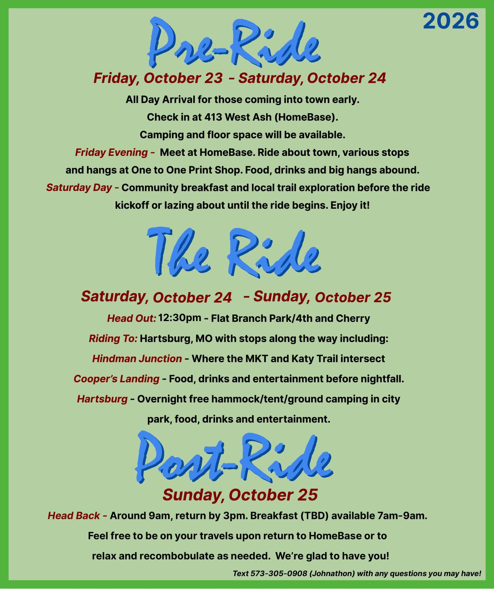
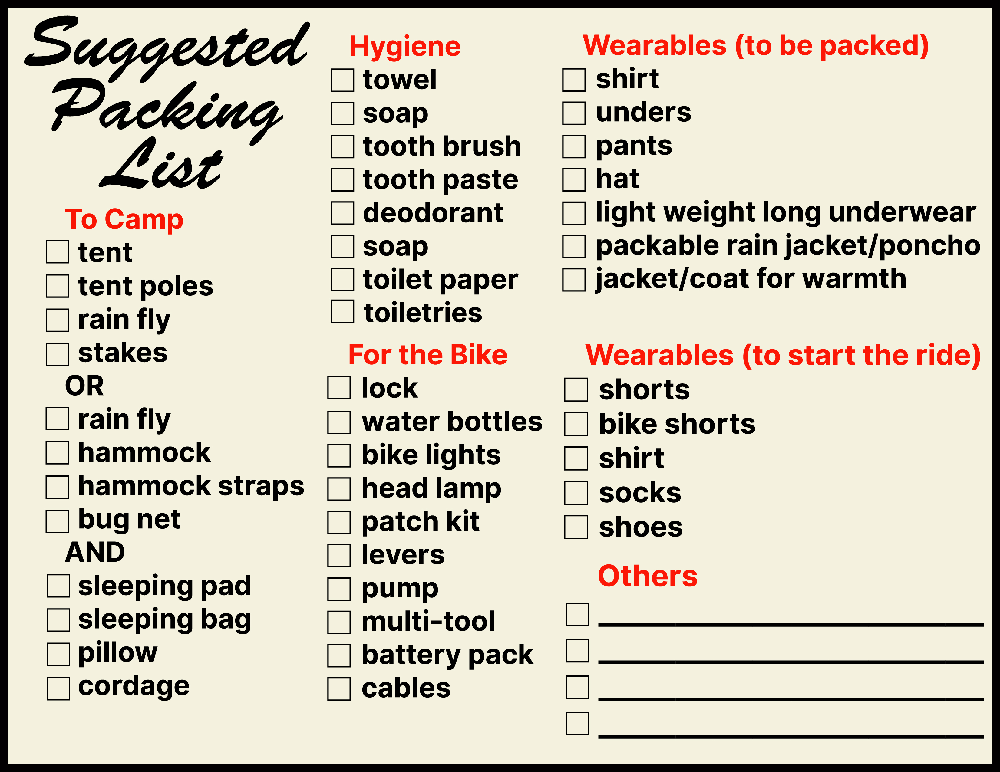

The Muskrat Ramble is a self-supported, multi-day bikepacking event. Beginning in downtown Columbia,
it follows the MKT and Katy Trails along the scenic Missouri River, leading to our campsite(s) in Hartsburg.
Sign up for the 2026 Ramble here.

